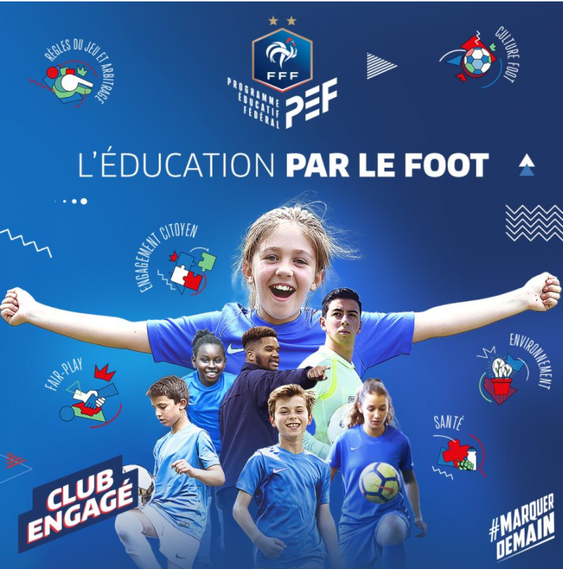

Le Programme Éducatif Fédéral (P.E.F)
Qu'est-ce que le P.E.F ?
Le Programme Éducatif Fédéral vise à transmettre les valeurs du football et de la vie à travers la pratique sportive. Il s'articule autour de plusieurs thématiques : santé, engagement citoyen, environnement, fair-play, règles du jeu et arbitrage, et culture foot.
- Santé : Sensibilisation à l'hygiène de vie, à la nutrition et à la prévention des blessures.
- Engagement citoyen : Respect des autres, solidarité, bénévolat et vie associative.
- Environnement : Protection de la nature, gestion des déchets, économies d'énergie.
- Fair-play : Respect des règles, des adversaires, des arbitres et des partenaires.
- Règles du jeu et arbitrage : Comprendre et respecter les règles, découvrir le rôle de l'arbitre.
- Culture foot : Histoire du football, grands événements, valeurs du sport.
Le P.E.F est mis en place lors des entraînements, des matchs et à travers des actions spécifiques tout au long de la saison. Il contribue à former des jeunes joueurs responsables, respectueux et engagés.
Exemples d’actions PEF au club

Atelier Nutrition
Découverte des bons réflexes alimentaires avant/après l’effort, animée par un éducateur diplômé.

Ramassage de déchets
Action citoyenne : les jeunes du club participent à la propreté du stade et de ses abords.

Challenge Fair-Play
Valorisation des bons comportements sur et en dehors du terrain, avec remise de diplômes.